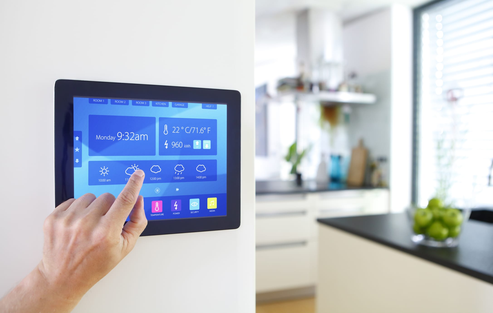

Get the most out of your smart home system with these tips!
Smart home technology has come a long way in recent years, and there are now a number of systems on the market that can make your home smarter.
If you’re like most people, you probably think of a “smart home” as one that’s automated and controlled by a single central system. While this may have been the only type of smart home just a few years ago, that’s no longer the case. Today, there are a number of different types of smart home systems on the market, each with its own advantages and disadvantages. حلول المنازل الذكية
The first type of smart home system is the automated home.
Automated homes are those that are completely controlled by a single central system. This type of system can be used to control everything from the lights to the temperature to the security system. While an automated home can provide a high level of convenience and control, it can also be expensive and difficult to install.
The second type of smart home system is the modular home.
Modular homes are made up of separate components that can be
added to or removed from the system at any time. This type of system is
more affordable and allows for a greater level of customization than an
automated home. حلول المنازل الذكية
The third type of smart home system is the DIY smart home.
Unlike the modular home, which is designed to be installed by a contractor, DIY smart homes are designed to be built by the homeowner. This type of home allows for a greater level of customization and functionality than an automated home.

Take advantage of automation: Automate tasks like turning lights off or locking doors to save time and energy.
The best way to get the most out of your smart home system is to automate common tasks. With automation, you can have lights turn off or doors lock automatically based on a schedule or when you leave home. This can save you time and hassle each day.
To get started with automation, take a look at your smart home system's settings and see what tasks you can automate. For example, many systems allow you to create a schedule for turning lights off and on, or have your door lock when you leave home. الانظمة الذكية للمنازل
If your system doesn't have built-in automation features, there are plenty of third-party apps and devices that can help.
Make use of sensors: Place sensors in key
One of the great things about smart home systems is that they can be customized to fit each individual’s needs. For example, if you want to make sure that you’re always aware of what’s going on in your home, you can place sensors in key areas. This will allow you to receive notifications when something out of the ordinary happens, such as a door opening when it’s not supposed to.
Sensors can also be used to control other aspects of your home. For example, you could use a motion sensor to turn on a light whenever someone enters a room. Or, you could use a moisture sensor to make sure your plants are getting the right amount of water. By using sensors in combination with your smart home system, you can create a custom environment that is perfect for you and your family.